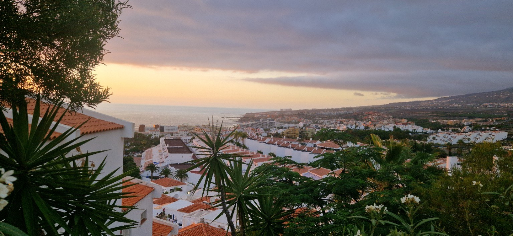
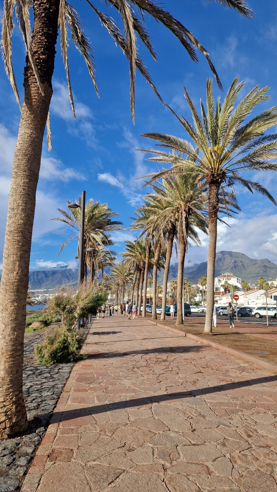
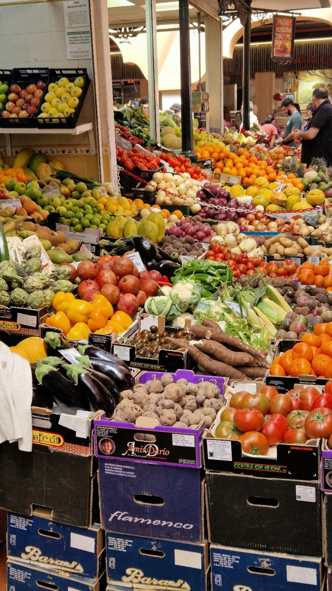
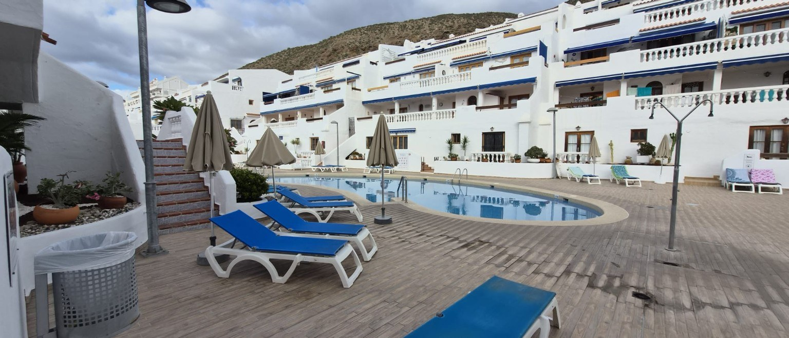
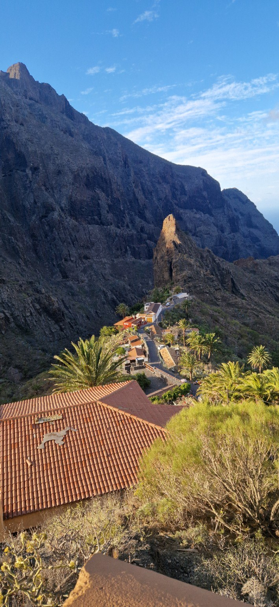
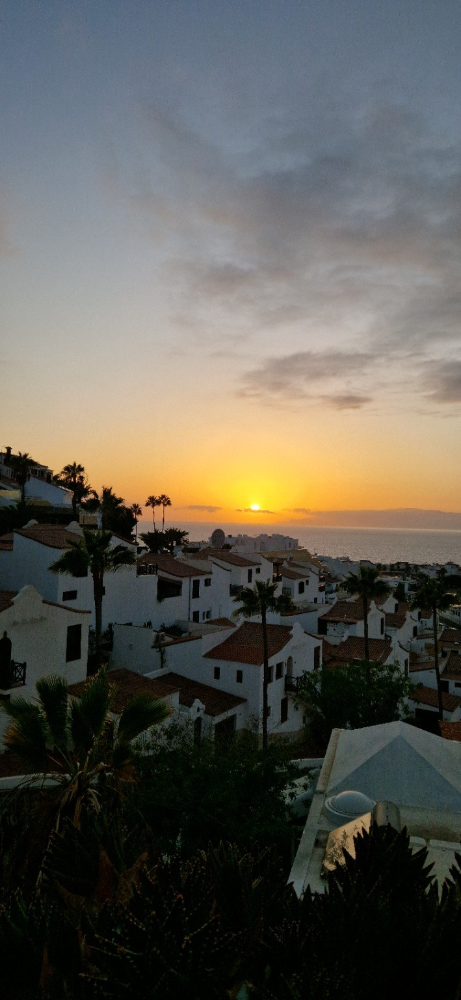

Cum a început povestea Tenerife Guide
De fiecare dată când avionul aterizează în Tenerife, am aceeași senzație.
Pentru câteva clipe, înainte ca ușile să se deschidă și oamenii să înceapă să-și caute bagajele, simt că am ajuns într-un loc pe care nu l-am părăsit niciodată cu adevărat.
Apoi cobor.
Aerul este diferit. Cald și ușor sărat, purtat dinspre Atlantic, cu Africa atât de aproape încât pare prezentă în lumină și în căldură. După orele petrecute în avion și lunile în care mi-am imaginat revederea, prima adiere îmi trezește o emoție greu de explicat.
Uneori îmi vine să mă opresc chiar acolo, pe pistă. Să mă întind pentru câteva secunde sub cerul insulei și să mă bucur, pur și simplu, că m-am întors.
Nu o fac, desigur.
Continui să merg alături de ceilalți pasageri, spre terminal, spre bagaje, spre drumul care mă va duce în sud. Dar pentru câteva clipe rămân suspendat în acel spațiu dintre sosire și întoarcere, când Tenerife nu este încă nici vacanță, nici destinație.
Este doar o emoție. Pentru mine, povestea insulei a început cu această senzație și, încet, mi-a schimbat planurile.
„Unele locuri îți oferă o vacanță. Altele îți dau un motiv să te întorci.”
Un loc care nu încearcă să te convingă
Prima mea întâlnire cu Tenerife nu a fost o revelație desprinsă dintr-un film.
Nu am privit oceanul și nu am știut imediat că insula va deveni importantă pentru mine. Nici nu mi-am imaginat că voi cumpăra cândva o proprietate aici.
La început, Tenerife era ceea ce este pentru cei mai mulți oameni: câteva zile cu soare, ocean, palmieri și suficientă distanță față de viața obișnuită.
Dar insula are un mod discret de a se apropia de tine.
Nu te cucerește printr-un singur peisaj și nu încearcă să-ți demonstreze nimic. Te lasă să o descoperi prin lucruri aparent mărunte:
Cu fiecare revenire am început să observ mai mult.
Tenerife nu era doar clima blândă pe care mulți o caută iarna și nici imaginea clasică a unei insule de vacanță.
Era o insulă a contrastelor: ocean și lavă, orașe aglomerate și sate prinse între stânci, promenade luminoase și drumuri care dispar în nori, hoteluri moderne și piețe în care fructele, vocile și mirosurile păstrează ritmul vieții locale.
Farmecul insulei nu stă doar în ceea ce îți arată.
Stă și în ceea ce te face să observi.

Un alt ritm
În viața de zi cu zi, timpul este adesea împărțit în lucruri care trebuie făcute, rezolvate și bifate.
În Tenerife, presiunea aceasta se estompează.
Dimineața poate începe cu o plimbare fără destinație exactă. Poți coborî spre ocean fără să te întrebi ce urmează. Poți rămâne câteva minute privind apa, deși nu se întâmplă nimic spectaculos.
Aici am redescoperit plăcerea de a nu transforma fiecare clipă într-un rezultat.
Pe promenadă, dimineața, vezi oameni care aleargă, familii ieșite la plimbare și oameni care își beau cafeaua privind marea. Unii au venit pentru câteva zile. Alții revin de ani întregi. Câțiva au ales să rămână.
În timp, am încetat să mai privesc Tenerife ca pe un decor.
Am început să o privesc ca pe un mod de a fi mai atent: la lumină, la ocean și la lucrurile pe lângă care, în alte împrejurări, aș fi trecut în grabă.

Los Cristianos și sentimentul întoarcerii
Am vizitat mai multe zone ale insulei.
Costa Adeje poate fi elegantă și rafinată. Playa de las Américas are energie și o viață care continuă mult după apus. Santa Cruz are ritmul unui oraș adevărat, iar nordul arată o Tenerife mai verde, mai răcoroasă și uneori mai misterioasă.
Dar Los Cristianos a rămas locul în care am găsit echilibrul pe care îl căutam.
Nu este perfect. Nici nu trebuie să fie.
Este un oraș viu, cu port, plaje, restaurante, magazine, străzi aglomerate și zone liniștite. Un loc în care poți veni pentru câteva zile, dar în care te poți imagina revenind mereu.
Dimineața, orașul aparține celor care se trezesc devreme. Mesele sunt încă goale, promenada respiră, iar oceanul pare mai aproape.
Seara, luminile restaurantelor se aprind, iar oamenii se îndreaptă din nou spre apă. Uneori cerul rămâne limpede. Alteori norii se aprind în roșu, violet și portocaliu, iar orașul pare că se oprește pentru câteva minute.
Am fotografiat multe dintre aceste seri.
Nu pentru că voiam să adun imagini, ci pentru că nu voiam să uit.
Mai târziu am înțeles că o fotografie nu păstrează doar locul. Păstrează și omul care eram atunci: felul în care priveam, ceea ce speram și tot ceea ce încă nu știam.
De aceea unele imagini devin mai valoroase odată cu trecerea anilor. Nu pentru că sunt perfecte, ci pentru că deschid o ușă către o versiune mai veche a noastră.
Dincolo de imaginea de carte poștală
Ar fi simplu să scriu despre Tenerife numai prin ocean, plaje și apusuri.
Dar insula nu trăiește doar în imaginile spectaculoase.
Trăiește și în piețe, în vocile comercianților, în fructele pe care le vezi pentru prima dată și în aglomerația unei dimineți obișnuite.
În Santa Cruz, la Mercado de Nuestra Señora de África — La Recova — am descoperit una dintre aceste fețe ale insulei.
Clădirea, cu turnul și arcadele sale, te invită să intri. Povestea adevărată începe însă în interior.
Tarabele sunt pline de culoare. Oamenii întreabă, aleg și discută. Nu există liniștea unui apus sau spațiul larg al oceanului. Există mișcare, mirosuri, gesturi și viață.
Aici Tenerife nu mai este o destinație pregătită pentru turiști.
Este locul în care oamenii își duc viața de zi cu zi.
Un loc începe să devină cu adevărat important atunci când vrei să-l cunoști și dincolo de ceea ce îți este prezentat într-un ghid.

Când o vacanță devine o decizie
Nu am cumpărat proprietatea din impuls.
În spatele deciziei au existat luni de documentare, calcule, comparații și întrebări. Am analizat zone, prețuri, costuri și riscuri. Am încercat să disting între entuziasmul unei vacanțe și realitatea unei investiții pe termen lung.
Una este să iubești un loc pentru câteva zile.
Alta este să legi de el o parte importantă din viitorul tău.
La un moment dat însă, cifrele nu mai pot decide singure.
Poți compara proprietăți până când toate încep să semene între ele. Poți analiza piața și poți construi scenarii. Dar există o întrebare la care niciun tabel nu poate răspunde:
Aș vrea să mă întorc aici și dacă nu ar exista nicio rezervare?
Pentru mine, răspunsul a fost da.
Nu cumpăram doar un apartament.
Cumpăram timp viitor. Dimineți care încă nu se întâmplaseră.
Cafele nebăute. Apusuri pe care nu le văzusem. Amintiri care încă nu existau.
Privind în urmă, cred că aceasta a fost adevărata investiție: posibilitatea de a reveni.

După ce primești cheile
Mulți își imaginează că achiziția unei proprietăți se încheie în ziua în care primești cheile.
Pentru mine, atunci a început partea cea mai grea.
Apartamentul trebuia pregătit nu doar pentru a arăta bine în fotografii, ci pentru a fi locuit. Am ales mobilierul, dotările și toate acele detalii aparent mărunte care, împreună, schimbă felul în care este trăit un sejur.
Nu mi-am dorit un spațiu creat pentru imagini perfecte și dezamăgitor în realitate.
Mi-am dorit un loc în care și eu aș fi fost bucuros să stau.
Îmi amintesc liniștea din apartament după ce am primit cheile. Pe masă mai rămăseseră câteva hârtii, iar de afară se auzea vag apa piscinei. Nu se întâmpla nimic spectaculos.
Și tocmai atunci am înțeles că locul acela nu mai era doar o proprietate văzută într-un anunț.
Devenise locul meu.
Am învățat că ospitalitatea nu înseamnă doar să oferi o cheie și un pat. Înseamnă să privești spațiul prin ochii omului care tocmai a călătorit ore întregi și care își dorește, înainte de orice, să se simtă bine.
O proprietate poate fi cumpărată într-o zi, dar sentimentul de acasă se construiește încet.
Prin atenție. Prin răbdare. Prin felul în care alegi să îți pese.
O fereastră către o poveste
Nu am cumpărat apartamentul pentru un câștig rapid.
L-am cumpărat ca investiție pe termen lung, într-un loc în care am încredere și în care îmi place să revin.
Dar ar fi incomplet să reduc totul la această explicație.
O proprietate are o valoare financiară.
Un loc poate dobândi o valoare personală.
Pentru mine, Port Royale 285 a devenit punctul din care privesc insula. Nu centrul ei și nici singurul motiv pentru care mă întorc.
Ci începutul — o fereastră către o poveste.
Prin această fereastră văd Los Cristianos dimineața, lumina serii și oceanul care nu are niciodată aceeași culoare.
Dar văd și drumurile care pleacă de aici spre Santa Cruz, Teide, nordul insulei și satele în care muntele pare că se închide în jurul caselor.
Spre locuri pe care încă nu le cunosc și spre povești pe care încă nu le-am scris.

Insula pe care nu o termini de descoperit
Masca este unul dintre locurile care spulberă imaginea simplificată a unei insule tropicale.
Acolo, Tenerife devine verticală.
Stâncile se ridică abrupt, drumurile se răsucesc, iar casele par așezate într-un loc în care geografia nu ar fi trebuit să permită viața.
Lumina cade diferit. Umbrele sunt mai adânci. Oceanul pare departe, deși rămâne mereu prezent.
În fața unui astfel de peisaj înțelegi că Tenerife nu este un loc pe care îl poți bifa.
Nu îl termini într-o săptămână; îl descoperi pe fragmente, în anotimpuri și stări de spirit diferite.
De aceea Tenerife Guide nu va fi o colecție de liste despre ceea ce „trebuie” văzut în trei, cinci sau șapte zile.
Vreau să păstrăm loc pentru curiozitate, pentru drumuri neplanificate și pentru momentele care nu apar în itinerar, dar care devin cea mai importantă parte a unei călătorii.
Cum a început Tenerife Guide
Ideea proiectului nu s-a născut într-o ședință și nici dintr-un plan de afaceri.
S-a format treptat, din fotografii, întrebări și dorința de a păstra ceea ce trăiam.
Am observat că multe informații despre Tenerife se repetă în aceleași forme: liste, clasamente, descrieri lipsite de voce și imagini fără poveste.
Tenerife Guide nu va încerca să fie cel mai mare site despre insulă.
Poate vom publica doar cinci articole într-un an, dar fiecare va trebui să merite.
Fiecare text va porni de la un loc în care am fost, de la o experiență trăită sau de la o întrebare la care am căutat un răspuns adevărat.
Fotografiile vor fi originale.
Recomandările vor fi sincere.
Iar atunci când un loc nu va fi perfect, nu vom pretinde că este.
Nu scriem numai pentru cititorul care deschide articolul astăzi.
Scriem și pentru omul care îl va descoperi peste douăzeci de ani.
Poate nu va ști cine am fost. Poate insula se va fi schimbat. Dar mi-aș dori să citească aceste rânduri și să simtă aerul cald de la coborârea din avion.
Să vadă lumina peste casele albe.
Să audă oceanul, măcar în imaginație.
Și să înțeleagă de ce un om a revenit într-o insulă până când acea insulă a devenit parte din viața lui.
„Nu scriem doar ca să fim citiți astăzi. Scriem pentru ca o emoție să poată fi redescoperită peste douăzeci de ani.”
Promisiunea noastră
Acesta este primul editorial.
Peste ani, poate vom avea zeci de articole, mii de fotografii și povești din locuri pe care astăzi încă nu le cunoaștem.
Esența trebuie însă să rămână aceeași.
Nu vom publica niciodată un text care nu este demn de Tenerife Guide.
Nu vom transforma experiențele în reclamă și nu vom sacrifica adevărul pentru o imagine mai frumoasă.
Vom încerca să nu arătăm doar unde se află un loc.
Vom păstra ceva din felul în care se simte.

Când privesc Tenerife de sus, peste acoperișurile albe și oceanul care se pierde în lumină, mă gândesc la toate lucrurile care au început fără să știu.
O vacanță a devenit o întoarcere. O întoarcere a devenit o decizie. O decizie a devenit un loc. Iar acel loc a devenit o poveste.
Pentru mine, o parte a rămas în Tenerife.
Tenerife Guide este felul meu de a deschide această fereastră și pentru ceilalți.
Founder of Tenerife Guide